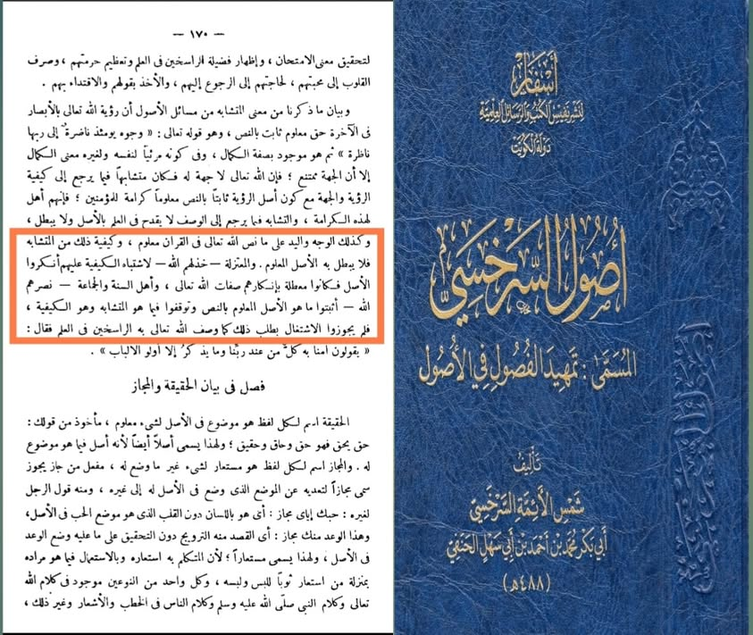

দেহবাদি আকিদাহ যখন হানাফি মাজহাবে- (২)
২০ জুলাই, ২০২৩
দেহবাদি আকিদাহ যখন হানাফি মাজহাবে- (২)
সিফাতে খাবারিয়্যাহর ক্ষেত্রে আশআরি ও মাতুরিদি মানহাজ হল দু'টি— তাওয়িল অথবা তাফউইদ। সুতরাং শব্দের অর্থ সাব্যস্ত করা মানেই দেহবাদ, তাদের কাছে। এ হিসেবে যারাই ইসবাতের আকিদাহ রাখতেন বা সমর্থন করতেন, সবাই দেহবাদি হিসেবে গণ্য হবেন। তাহলে এবার আমরা হানাফি মাজহাবের বিখ্যাত একজন ইমাম, উসূলবিদ শামসুল আয়িম্মাহ আবু বকর মোহাম্মদ বিন আহমদ আস-সারাখসি (মৃত্যু-৪৮৮ হি.) রাহ. বক্তব্য দেখি। তিনি বলেন—
وكذلك الوجه واليد على ما نص الله تعالى في القرآن معلوم وكيفية ذلك من المتشابه فلا يبطل به الأصل المعلوم
والمعتزلة خذلهم الله لاشتباه الكيفية عليهم أنكروا الأصل فكانوا معطلة بإنكارهم صفات الله تعالى وأهل السنة والجماعة نصرهم الله أثبتوا ما هو الأصل المعلوم بالنص وتوقفوا فيما هو المتشابه وهو الكيفية فلم يجوزوا الاشتغال بطلب ذلك.
অনুরূপভাবে, চেহারা ও হাত, কোরআনে আল্লাহর দেয়া বক্তব্য অনুসারে (আমাদের নিকট) পরিজ্ঞাত। আর তার কাইফ-ধরণ সাদৃশ্যপূর্ণ বিষয়ের অন্তর্ভুক্ত। এর দ্বারা জ্ঞাত আসলকে বাতিল করা যাবে না।
মু'তাযিলা সম্প্রদায়, (আল্লাহ তাদের ব্যর্থ করুন) ধরণটা তাদের কাছে অস্পষ্ট হওয়ায়, তারা আসলকে অস্বীকার করেছে। ফলে আল্লাহর সিফাতসমূহ অস্বীকার করার কারণে তারা (মুয়াত্তিলা) নিষ্ক্রিয়কারীতে পরিণত হয়েছে। আর আহলেসুন্নাহ ওয়াল-জামাআত (আল্লাহ তাদের সাহায্য করুন) নসের মাধ্যমে জ্ঞাত আসলকে সাব্যস্ত করেছেন এবং সাদৃশ্যপূর্ণ বিষয়ে তথা ধরণের ব্যাপারে তাওয়াক্কুফ করেছেন/ক্ষান্ত হয়েছেন; ধরণ অনুসন্ধানে লিপ্ত হতে তারা অনুমোদন করেন নাই।
[তামহিদুল ফুসুল ফিল উসূল/উসূলে সারাখসি-১/১৭০]
কেউ কেউ এ ডাউট তৈরি করতে পারে যে, এখানে স্রেফ শব্দ সাব্যস্ত করা উদ্দেশ্য; অর্থ নয়। তাদের এ ডাউট যে ভ্রান্ত, তা লেখকের আগের পৃষ্ঠা লক্ষ্য করলেই প্রমাণিত হয়ে যায়। তিনি বলেছেন—
أن رؤية الله تعالى بالأبصار في الآخرة حق معلوم ثابت بالنص... كون أصل الرؤية ثابتا بالنص معلوما كرامة للمؤمنين فإنهم أهل لهذه الكرامة والتشابه فيما يرجع إلى الوصف لا يقدح في العلم بالأصل ولا يبطل.
[প্রাগুক্ত-১/১৬৯]
এখানে তিনি পরকালে আল্লাহর দিদার-দর্শন লাভের আকিদাহ সাব্যস্ত করেছেন। কিন্তু কেউ-ই এই দাবি করে না যে, তিনি স্রেফ ‘روية’ শব্দটি সাব্যস্ত করেছেন; তার অর্থ ‘দর্শন’-কে ‘তাফউইদ’ করেছেন। তাহলে পরবর্তী অংশ যেখানে তিনি ‘দর্শন’ সাব্যস্ত করার ন্যায় ‘হাত’ ও ‘চেহারা’ সাব্যস্ত করেছেন এই বলে যে,
وكذلك الوجه واليد على ما نص الله تعالى في القرآن معلوم وكيفية ذلك من المتشابه فلا يبطل به الأصل المعلوم...
অনুরূপভাবে, (অর্থাৎ দর্শনের ন্যায়) চেহারা ও হাত, কোরআনে আল্লাহর দেয়া বক্তব্য অনুসারে (আমাদের নিকট) পরিজ্ঞাত। আর তার কাইফ-ধরণ সাদৃশ্যপূর্ণ বিষয়ের অন্তর্ভুক্ত। এর দ্বারা জ্ঞাত আসলকে বাতিল করা যাবে না। [প্রাগুক্ত]
অর্থাৎ দর্শন যেমন সাব্যস্ত, হাত ও চেহারা তেমনই সাব্যস্ত।
এখানে কোনো একজন আশআরি বা মাতুরিদি পাবেন না, যে ‘রু'ইয়াত’-এর অর্থকে তাফউইদ করে। তাহলে লেখক ‘وجه’ (চেহারা) ও ‘يد’ (হাত) সাব্যস্ত করায় এখানে তারা অর্থ তাফউইদের দাবি করেন কোন যুক্তিতে? বস্তুত, এটাই তাহরিফ-অপব্যাখ্যা। পূর্ববর্তী ইমামগন যা বলেছেন, আশআরি আর মাতুরিদি সব বক্তব্যকে অপব্যাখ্যা করে ছেড়েছে। কিন্তু তা কখনো ধোপে টিকে নি, আলহামদুলিল্লাহ।
সুতরাং তাদের ওপর ওয়াজিব হল ইমাম সারাখসিকেও দেহবাদি ট্যাগ দেয়া। কেননা তিনি আল্লাহর হাত ও চেহারা সাব্যস্ত করেছেন।
ওহে, যারা শাইখুল ইসলাম ইবনু তাইমিয়াকে রাহ. সিফাত সাব্যস্ত করার অপরাধে দেহবাদি ট্যাগ দাও! তারা তাঁর বক্তব্য দেখে নাও। তিনি বলেন—
لا يختلف أهل السنة أن الله تعالى ليس كمثله شيء لا في ذاته ولا في صفاته ولا في أفعاله؛ بل أكثر أهل السنة من أصحابنا وغيرهم يكفرون المشبهة والمجسمة.
“আহলেসুন্নাহর মতভেদ নেই যে, মহান আল্লাহর অনুরূপ কিছুই নেই; না তার সত্তায়, না তাঁর গুণাবলিতে, আর না তাঁর কর্মে। বরঞ্চ, আমাদের সঙ্গী-সাথী ও অন্যান্যদের মধ্যে অধিকাংশ আহলেসুন্নাহ সাদৃশ্যবাদি ও দেহবাদিদের তাকফির করে থাকেন।” [মাজমুউল ফাতাওয়া- ৬/৩৫৬]
তবুও জাহম বিন সাফওয়ানের রূহানী মূর্খ সন্তানেরা বলে ইবনু তাইমিয়া নাকি দেহবাদি। ওদিকে তাদের বাপ-দাদা-আকাবির সিফাত সাব্যস্ত করে দেহবাদি হয়ে আছে, সে খবর কি তারা রাখে!
চলবে....ইনশাআল্লাহ।
#দেহবাদি
